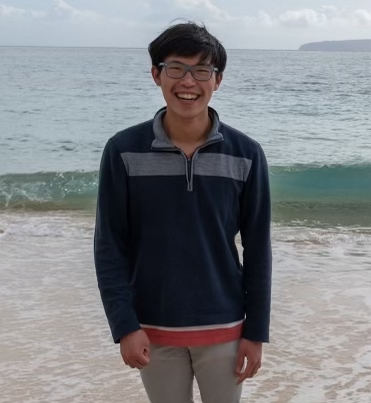

Jeffrey Kuan
Assistant Professor
Department of Mathematics
University of Rochester

Welcome!
I am an Assistant Professor at the University of Rochester math department. I am interested in partial differential equations, deterministic and stochastic fluid dynamics, fluid-structure interaction (FSI), and applied mathematics. I received my Ph.D. in mathematics at University of California, Berkeley, under the supervision of Professor Sunčica Čanić, and completed an NSF Postdoctoral Fellowship at University of Maryland, College Park, sponsored by Konstantina Trivisa.
I received an A.B. degree from Princeton University in 2018 in mathematics with a certificate in musical performance (in violin).
Currently, I am working on studying deterministic and stochastic partial differential equations arising in compressible flow dynamics and poroelasticity.